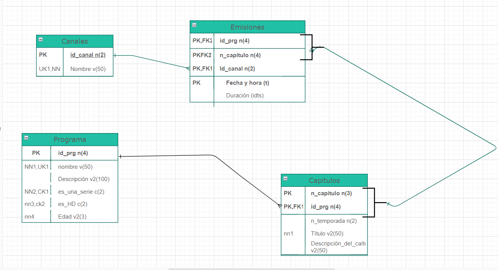

Proyecto de repaso de ASGBD
| Creando la base de datos paso a paso | |
|---|---|
|
Lo primero que he hecho es ver la página de rtve con el enunciado del ejercicio al lado y he tomado apuntes para ver que valores iba a meter en la base de datos y que tipos de datos voy a necesitar. |
|
|  |
Depués de crear un modelo entidad/relación en un folio y corregir diferentes fallos he procedido a pasarlo con Draw.io un programa que nos recomendó el profesor Jorge Sánchez para diseñar el modelo. Podemos ver una foto del modelo en la celda de al lado del esquema que he seguido a la hora de diseñar la base de datos. |
|
|
|